The mmi package was used in the recently published article “Natural variation in immune cell parameters is preferentially driven by genetic factors”, (Patin et al. 2018). The article tries to quantify the sources of variation for different functions in the immune system. It includes three different immunophenotypes: counts of immune cells per blood volume, mean flourescence intensity of surface markers per blood volume, and a few ratios between cell counts.
Determinants of a phenotype are either genetical, i.e differences in the genome of individuals, or non-genetical, intrinsic factors such as age, sex, and various cultural and demographical factors, or an interaction between the two. We focus on genetical and non-genetical factors in the article, leaving out interactions. A total of 166 immunophenotypes are analyzed, measured on 1000 people from France stratified evenly across bins of 10 years, between 20 and 70 years old, and across sex.
Here we redo the analysis of the impact of non-genetical factor on the immunophenotypes. We do not reproduce the analysis of genetical factors, since we cannot publically release the genetics data due to privacy issues. Also, 184 of the 1000 donors included in the study did not want their data to be publically available. Therefore we only publish data from the remaining 816 donors.
The analysis is based on functionality implemented mmi package. We will not describe the inner workings of the package itself in any detail here, interested readers are pointed to the forthcoming mmi package vignette and the forthcoming mmi R documentation. Note that the R documentation right now is not updated and is incorrect.
First we load some libraries:
library(tidyverse)
library(magrittr)
library(scales)
library(mmi)The immunophenotypes, stored in the variable facs, and the non-genetical variables, stored in the variable ecrf, are loaded to memory with the mmi package:
dim(facs)## [1] 816 167dim(ecrf)## [1] 816 44Included in the package is the tibble facs_annotation that stores the names of the immunophenotypes in the facs tibble, cleaned up names used in figures, and information on whether an immune parameter belongs to the adaptive or the innate immune system.
We will need a tibble including all data:
db <- left_join(facs, ecrf)We can take a look at the distribution of age and sex in the data after removing donors that did not want their data to be public:
table(ecrf$Sex)##
## Male Female
## 399 417table(cut(ecrf$Age, breaks = c(20, 30, 40, 50, 60, 70)))##
## (20,30] (30,40] (40,50] (50,60] (60,70]
## 122 160 170 188 176Originally, each of these bins had 200 donors, so it is apparently mostly young people that are concerned with their data privacy.
The mmi package includes the function plot_list that conveniently plots histograms of variables in a data frame (actually it plots variables in a list, hence the name, but data frames are lists). We can use it to look at the numerical non-genetical variables:
plot_list(select(keep(ecrf, is.numeric), -SUBJID), title_sz = 9)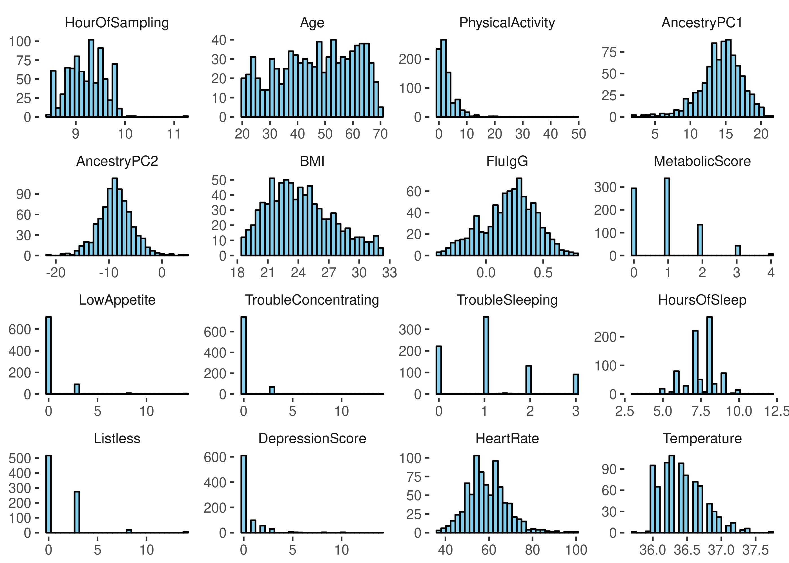
The MetabolicScore variable is a composite variable designed to measure an individuals metabolic health, described in (S. Thomas et al. 2015). The HourOfSampling is the hour of the day when the blood sample for the measurement was drawn. The other variables are usual intrinsic factors like age, typical clinical variables like body temperature and heart rate, antibodies for flu (FluIgG), and variables related to mental health. The variable DepressionScore is a composite variable similar to MetabolicScore, that summarizes the other mental health variables.
We can take a look at the categorical variables by first converting their values to numeric:
plot_list(keep(ecrf, function(x) !is.numeric(x)), title_sz = 6)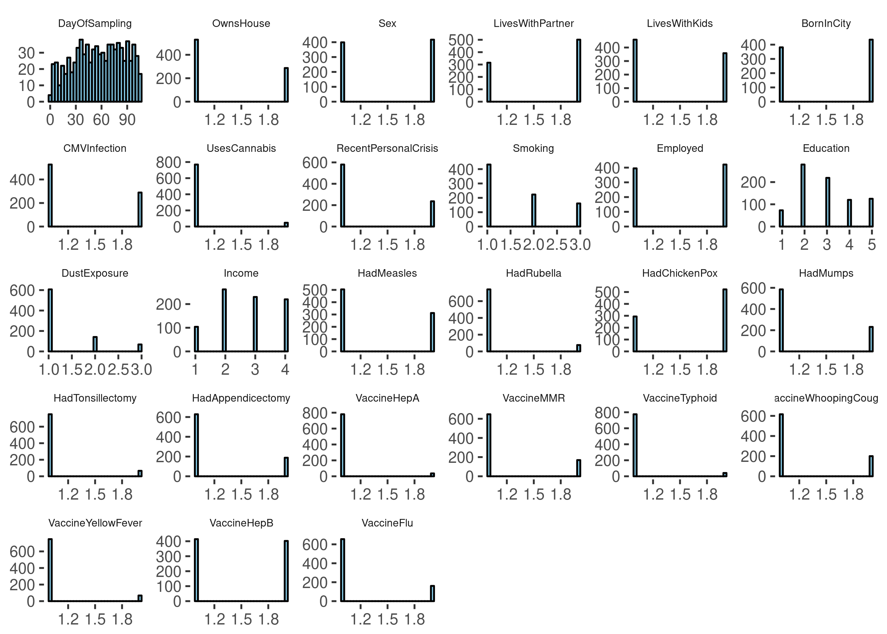
There are some socio-economic variables like level of education and income, and variables related to vaccination and childhood diseases. The variables Sex, CMVInfection, which states if an individual is seropositive for the cytomegalovirus (https://en.wikipedia.org/wiki/Cytomegalovirus), and Smoking are key variables in the study. The DayOfSampling variable is what day the blood was drawn for the sample.
Let us look a little closer on the DayOfSampling variable. To see how many donors had blood drawn at a particular day (counted from the first day) we can for instance do:
people_each_day <- as.numeric(table(ecrf$DayOfSampling))
c(mean(people_each_day), 1.96 * sd(people_each_day))## [1] 7.698113 4.802294plt_frame <- tibble(day = as.numeric(levels(ecrf$DayOfSampling)),
nr_people = people_each_day)
ggplot(plt_frame, aes(x = day, y = nr_people)) +
geom_point(size = 2) +
scale_x_continuous(breaks = pretty_breaks(n = 10)) +
scale_y_continuous(breaks = seq(1, 12, 1), minor_breaks = NULL) +
theme_bw()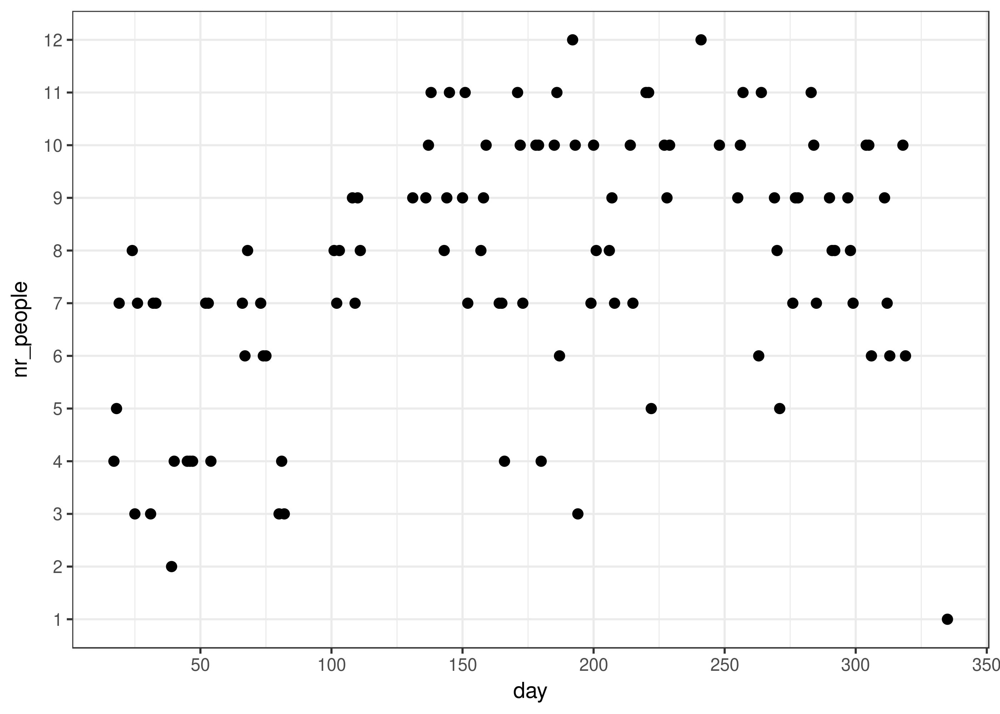
So around \(7.7 \pm 4.80\) blood samples are drawn each day. To see if there is a batch effect across day of blood draw we can estimate the intraclass correlation coefficient. This is the correlation among observations within the same day (assuming the correlation is the same across days). If this parameter is large it means that the variation between days is larger then the variation within days, indicating a batch effect, since donors where randomly assigned to day of blood draw. The intraclass coefficient can also be interpreted as the proportion of the total variability attributed to variability between days. To compute it we must first setup the models. In this case we only want the day of sampling as a random effect, and we want to build a model for each immunophenotype:
spec <- specify(facs_annotation$FACS.NAME, rands = "DayOfSampling")
fam <- make_fam(spec, db)
intraclass <- prop_var(fam)
select(intraclass, response, prop_var) %>% arrange(desc(prop_var))## # A tibble: 166 x 2
## response prop_var
## <chr> <dbl>
## 1 MFI_CCR7_in_CD8bpos_EM.panel1 88.6
## 2 MFI_CCR7_in_CD4pos_EM.panel1 88.4
## 3 MFI_CCR7_in_CD8bpos_EMRA.panel1 88.3
## 4 MFI_CCR7_in_CD8bpos_CM.panel1 86.4
## 5 CD19_MFI_in_Bcells.panel6 83.2
## 6 MFI_NEUTROPHILS_FceRI.panel7 83.1
## 7 MFI_CCR7_in_CD4pos_CM.panel1 77.4
## 8 MFI_CD16_in_CD14hi_mono.panel5 76.3
## 9 MFI_CCR7_oin_CD4pos_EMRA.panel1 74.2
## 10 MFI_HLADR_in_CD56hi.panel4 70.7
## # ... with 156 more rowsApparently, day of blood draw has a huge effect on some immunophenotypes, particularly MFIs. To get a sense of how day of blood draw affects the measurements we can plot immunophenotype values across days. Let us take a look at the 6 immunophenotypes with the largest intraclass coefficient.
resp <- intraclass %>%
arrange(desc(prop_var)) %>%
slice(1:6) %$% response
plt_frame <- db[c("DayOfSampling", resp)] %>%
gather(key = "Pheno", value = "Value", -DayOfSampling)
plt_frame$Pheno <- factor(plt_frame$Pheno, levels = resp)
plt_frame %>%
ggplot(aes(x = factor(DayOfSampling), Value)) +
geom_boxplot() +
theme_bw() +
theme(axis.text.x = element_text(size = 4),
axis.title = element_blank(),
strip.text = element_text(size = 8)) +
facet_wrap(~ Pheno, scales = "free", ncol = 2)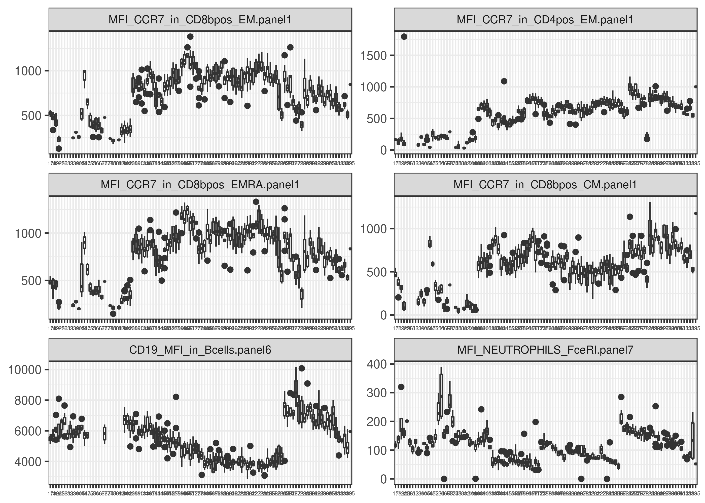
As expected, there is considerable between-day variability. Also, the pattern of variability does not look particularly Gaussian: there are outlier days for some phenotypes and the values sometimes seem to jump between blocks of days with similar measurements. There also appears to be autocorrelation in time, i.e, seasonality. We dont make an attempt to model the autocorrelation in any meaningful way in the paper, we just introduce a normal-distributed random effect to adjust for the batch effect.
We can take a look at how including a random effect controls for the batch effect by using the residuals function in the mmi package. Note that this function only works if all fitted models has the same predictors.
resids <- residuals(fam) %>%
filter(response %in% resp)
resids$response <- factor(resids$response, levels = resp)
resids %>%
ggplot(aes(x = factor(DayOfSampling), residuals)) +
geom_boxplot() +
theme_bw() +
theme(axis.text.x = element_text(size = 4),
axis.title = element_blank(),
strip.text = element_text(size = 8)) +
facet_wrap(~ response, scales = "free", ncol = 2)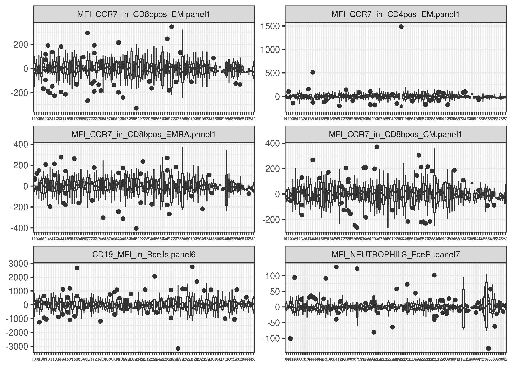
It is well-known that a person’s age affects their immunophenotype. Cytomegalovirus (CMV) serostatus is also a known determinant. Links have also been made between immune parameter levels and sex. We therefore include age and sex as controls for all models, and CMV infection status for absolute cell counts. We also include the batch variable hour of blood draw as a linear predictor for all models.
There are three different types of immunophenotypes in the study. We also have immune cells at various levels in the immune cell differentiation hierarchy. The further a particular cell is differentiated, the more skewed the distribution tends to be. Almost all immunophenotypes should also be positive. A reasonable way to model such data is often to use a log-normal distribution. However, some phenotypes have zero values. To deal with that we add a unit value to those observations prior to log transformation. The count phenotypes could also be modelled as being distributed according to a negative binomial distribution. We can make a comparison of the normal, lognormal, and negative binomal models using Aikaikes information criteria (AIC).
controls <- c("Age", "Sex")
count_controls <- c(controls, "CMVInfection")
# Names of counts
str_only_counts <- facs_annotation$FACS.NAME[grepl("^N_", facs_annotation$FACS.NAME)]
# Specify negative binomial models for all counts with the controls
# defined above as predictors
spec_nb <- specify(str_only_counts, controls = count_controls, model = "negbin")
# Specify normal models
spec_no <- specify(str_only_counts, controls = count_controls, model = "lm")
# Specify lognormal models
spec_logno <- specify(str_only_counts, controls = count_controls, model = "trans_lm",
trans = "log")
# Log normal models cannot include zeros
facs_with_zero <- map_lgl(facs, ~ any(na.omit(.) <= 0))
sum(facs_with_zero)
facs_with_zero <- names(facs[facs_with_zero])
facs_no_zeros <- facs
facs_no_zeros[facs_with_zero] <- facs_no_zeros[facs_with_zero] + 1
db_no_zeros <- left_join(facs_no_zeros, ecrf)
# Here we fit the models
fam_nb <- make_fam(spec_nb, db)
fam_no <- make_fam(spec_no, db)
fam_logno <- make_fam(spec_logno, db_no_zeros)
# The concatenation operator is overloaded for both spec_fam and fam objects
fam <- c(fam_nb, fam_no, fam_logno)
# Compute AIC
AIC_comp <- AIC(fam)
# We sort the phenotypes according to AIC value for the normal model
sort_resp <- AIC_comp %>%
filter(model == "mmi_lm", trans == "log") %>%
arrange(desc(AIC)) %$%
response
# Fixing some nice labels
anno <- left_join(tibble(FACS.NAME = sort_resp), facs_annotation)
AIC_comp$legend <- factor(AIC_comp$response, anno$FACS.NAME)
levels(AIC_comp$legend) <- anno$FACS.DESC
AIC_comp$model <- factor(paste0(AIC_comp$model, "x", AIC_comp$trans))
levels(AIC_comp$model) <- c("Normal", "Lognormal", "Negative binomial")
# Comparison plot
AIC_comp %>%
ggplot(aes(x = legend, y = AIC, group = model, colour = model)) +
geom_line() +
scale_y_continuous(breaks = pretty_breaks(20)) +
theme_bw() +
theme(axis.text.x = element_text(angle = 90, hjust = 1, size = rel(0.6)),
axis.title = element_blank())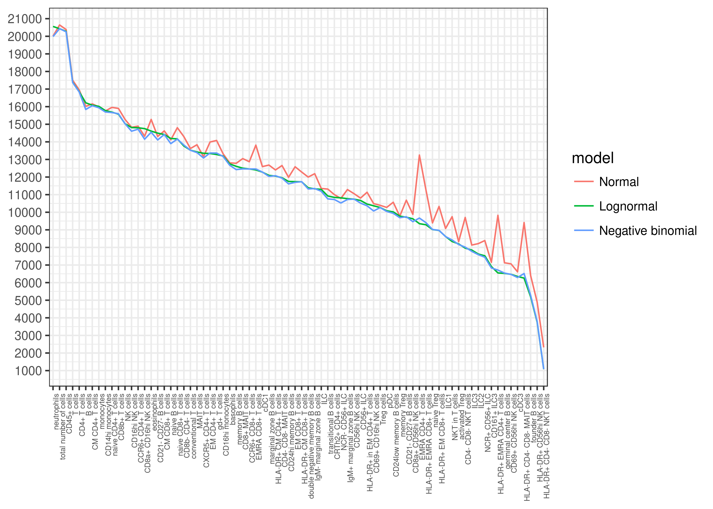
Using a normal distribution for the model of the response performs the worst for almost all phenotypes. The distinction between the log-normal and the negative binomial model is less clear, but the negative binomial model seems to have the advantage. We can try to investigate by plotting the qq-plots of the models that differed the most. First we plot qq-plots from the negative binomial models:
# Compute difference in AIC between negative binomial and lognormal models
aic_diff <- AIC_comp %>%
filter(model != "Normal") %>%
arrange(response, AIC) %>%
group_by(response) %>%
summarize(diff_models = diff(AIC), best_model = first(model)) %>%
arrange(diff_models)
# Find the 10 immunophenotypes that differed the most
top_10_nb <- aic_diff %>%
filter(best_model == "Negative binomial") %>%
tail(10) %>%
dplyr::select(response)
res <- residuals(fam_nb) %>%
dplyr::select(-predictors, -trans)
res %>%
filter(response %in% top_10_nb$response) %>%
ggplot(aes(x = expected_norm, y = residuals)) +
geom_point(size = 0.8) +
theme_bw() +
theme(strip.text = element_text(size = 6),
axis.title = element_blank()) +
facet_wrap(~ response, scales = "free", ncol = 3)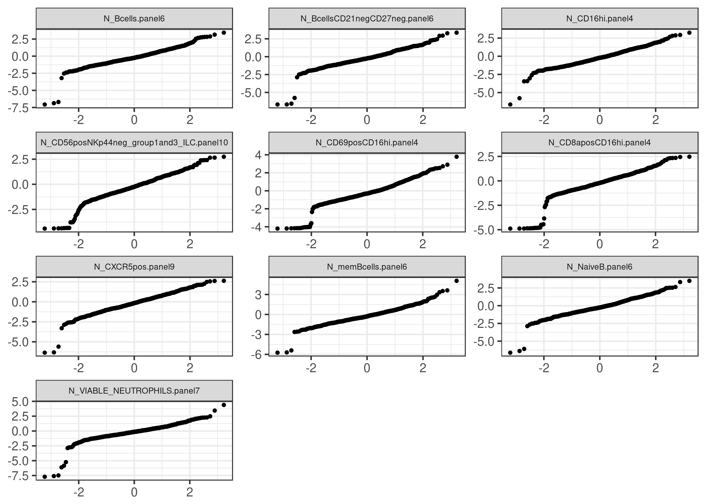
Then we plot the qq-plots from the log-normal models.
res <- residuals(fam_logno) %>%
dplyr::select(-predictors, -trans)
res %>%
filter(response %in% top_10_nb$response) %>%
ggplot(aes(x = expected_norm, y = residuals)) +
geom_point(size = 0.8) +
theme_bw() +
theme(strip.text = element_text(size = 6),
axis.title = element_blank()) +
facet_wrap(~ response, scales = "free", ncol = 3)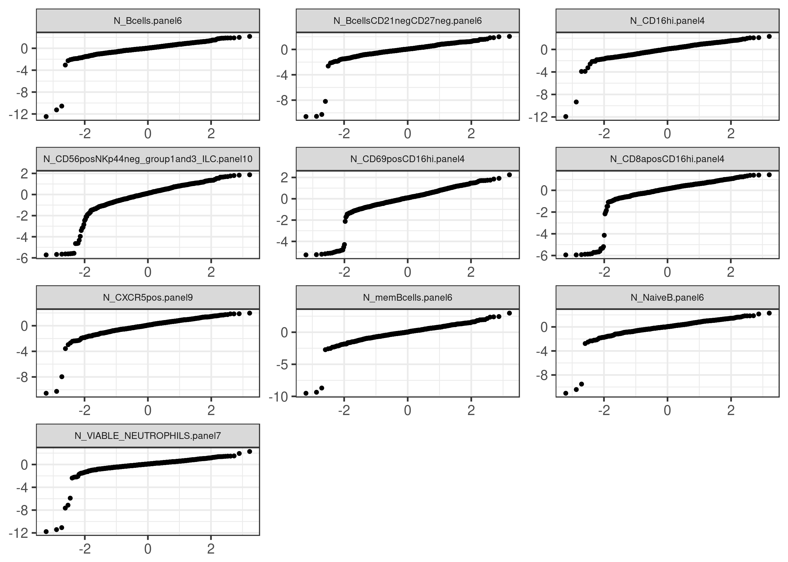
It is clear that the log-link in the negative binomial model and the log transformation in the log-normal model is not appropriate for the smallest values of these response variables. This appears to be problem for all the 10 response variables where the AIC differed the most between the models. It may be that the negative binomial model somehow deals better with the problem of misspecification for small values, although it cannot be easily discerned from the qq-plots.
It doesn’t make sense to use a count distribution for the ratio and MFI phenotypes so for those we only compare the normal and the log-normal distribution,
controls <- c("Age", "Sex", "Smoking", "CMVInfection")
# MFI names
str_mfis <- facs_annotation$FACS.NAME[grepl("^MFI_", facs_annotation$FACS.NAME)]
spec <- specify(str_mfis, controls = controls, model = "lm")
spec <- c(spec,
specify(str_mfis, controls = controls,
model = "trans_lm",
trans = "log"))
fam <- make_fam(spec, db_no_zeros)
AIC_comp <- AIC(fam)
sort_resp <- AIC_comp %>%
filter(model == "mmi_lm", trans == "log") %>%
arrange(desc(AIC)) %$%
response
anno <- left_join(tibble(FACS.NAME = sort_resp), facs_annotation)
AIC_comp$response <- factor(AIC_comp$response, anno$FACS.NAME)
levels(AIC_comp$response) <- anno$FACS.DESC
AIC_comp$model <- factor(paste0(AIC_comp$model, "x", AIC_comp$trans))
levels(AIC_comp$model) <- c("Normal", "Lognormal")
AIC_comp %>%
ggplot(aes(x = response, y = AIC, group = model, colour = model)) +
geom_line() +
scale_y_continuous(breaks = pretty_breaks(20)) +
theme_bw() +
theme(axis.text.x = element_text(angle = 90, hjust = 1, size = rel(0.6)),
axis.title = element_blank())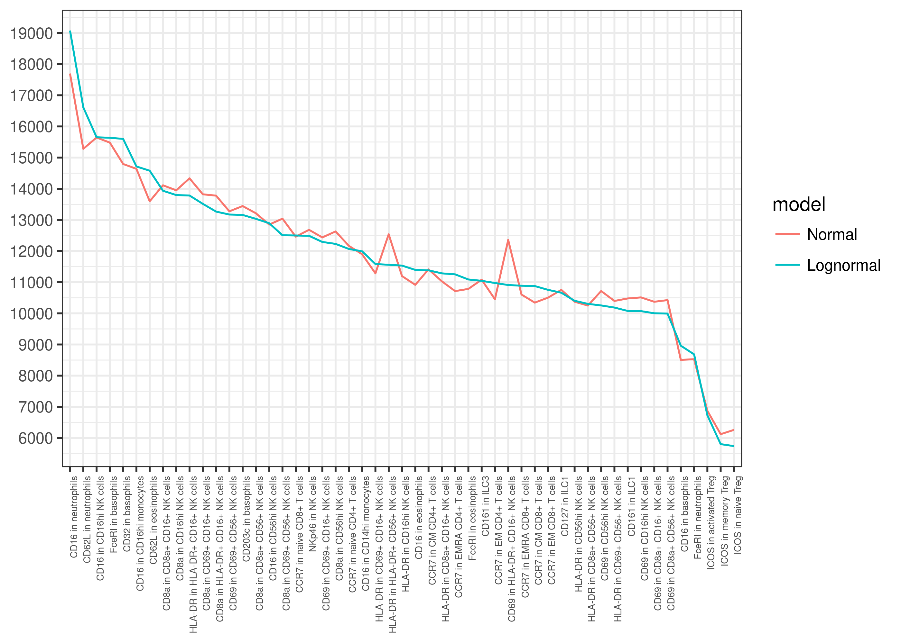
The two models appear to be similar, with some spikes in the normal model for some response variables. Overall the log-normal model works relatively well for all data, and in the interest of comparison between parameters we choose to model all response variables as being log-normally distributed. Note also that these comparisons have been done without the DayOfSampling random effect. Theoretically, adding a random effect would not change the relative performance of the models. However, (at least in our experience) the fitting of negative binomial random effects models is less robust than its linear counterpart.
We will fit a model for each response variable and each treatment variable, for a total of 6806 models. The models will be fit by the mmi package using functions from the lme4 package. We will use age, sex, and the hour of blood draw as covariates for all models, and we add CMV infection status as a covariate for absolute counts and ratios. We regard all 6806 models as one multiple testing family, and we use the false discovery rate as error rate (Benjamini and Hochberg 1995). We test the hypothesis that the linear regression parameter for the treatment variable on a particular response variable is zero using the kenward-rogers approximation of the F-test (Kenward and Roger 1997). We construct confidence intervals using the implementation in the lme4 package, which uses the profile likelihood (Bates et al. 2014). We only construct and show confidence intervals for parameters that are significant on the 0.01 level. To correct for this selection we widen the confidence intervals using the false coverage rate (FCR) procedure (Benjamini and Yekutieli 2005). The confidence intervals are constructed to have an FCR of 0.01.
First we create the specifications and fit the models,
controls_mfis <- c("HourOfSampling", "Sex", "Age")
controls_counts <- c("HourOfSampling", "Sex", "Age", "CMVInfection")
# Define treatmets
str_treatments <- names(ecrf)
str_treatments <- str_treatments[!str_treatments %in%
c("SUBJID", "HourOfSampling", "DayOfSampling")]
spec_mfis <- specify(str_mfis,
str_treatments,
controls = controls_mfis,
trans = "log",
model = "trans_lmm",
rands = "DayOfSampling")
str_counts_and_ratios <- facs_annotation$FACS.NAME[grepl("^N_", facs_annotation$FACS.NAME)]
spec_counts <- specify(str_counts_and_ratios,
str_treatments,
controls = controls_counts,
trans = "log",
model = "trans_lmm",
rands = "DayOfSampling")
spec <- c(spec_mfis, spec_counts)
spec## spec_fam object of length 5207.
## Contains:
## 5207 spec_trans_lmm objects, 127 response variables, and 41 treatment variablesfam <- make_fam(spec, db_no_zeros)
fam## fam object of length 5207.
## Contains:
## 5207 mmi_lmm objects, 127 response variables, and 41 treatment variablesNote that this procedure is quite memory intensive. There are functions in the package that are designed to have a smaller memory footprint, see the forthcoming package vignette for more information. Next we do the hypothesis tests and then construct the FCR-adjusted confidence intervals. Such confidence intervals can be constructed by the function select_confidence:
hyp <- ft(fam)
selected_confs <- select_confidence(fam, hyp, thresh = 0.01, level = 0.99)
# Add some metadata
selected_confs <- left_join(selected_confs, facs_annotation,
by = c("response" = "FACS.NAME")) %>%
select(-response) %>%
rename(response = FACS.DESC)There are 140 parameters significant on the 0.01 level. Printing and arranging, we see that the strongest signals are found for CMV infection status, age, and smoking:
left_join(hyp, facs_annotation, by = c("response" = "FACS.NAME")) %>%
select(-response, -test, -Type) %>%
rename(response = FACS.DESC) %>%
arrange(FDR)## # A tibble: 5,207 x 4
## treatment p FDR response
## <chr> <dbl> <dbl> <chr>
## 1 CMVInfection 8.07e-92 4.20e-88 EMRA CD4+ T cells
## 2 Age 3.37e-80 8.78e-77 naive CD8+ T cells
## 3 CMVInfection 1.18e-62 2.06e-59 HLA-DR+ EMRA CD4+ T cells
## 4 CMVInfection 2.14e-59 2.78e-56 EMRA CD8+ T cells
## 5 CMVInfection 3.64e-43 3.79e-40 HLA-DR+ EMRA CD8+ T cells
## 6 CMVInfection 1.17e-38 1.02e-35 EM CD4+ T cells
## 7 CMVInfection 2.51e-33 1.87e-30 HLA-DR+ in EM CD4+ T cells
## 8 Age 2.71e-31 1.76e-28 CD4- CD8- MAIT cells
## 9 Age 6.84e-31 3.95e-28 CD8b- CD4- T cells
## 10 Age 5.39e-28 2.80e-25 naive Treg
## # ... with 5,197 more rowsFinally, we plot the confidence intervals of the significant parameters as we do in the paper. Here, we color the effects based on if the immunophenotype is a part of the adaptive or the innate immune system. Since we have to do this four times it is convenient to define a function that sets up the plot:
plot_effects <- function(frame, title) {
plt_frame %>%
ggplot(aes(x = reorder(response, desc(est)), y = est,
ymin = FCR_lower, ymax = FCR_higher, colour = Type)) +
geom_errorbar(width = 0.6, size = 1.5) +
geom_point(size = 2, shape = 21, fill = "white") +
scale_y_continuous(breaks = pretty_breaks(10)) +
ylab("Effect Size") +
geom_hline(aes(yintercept = 1), colour = "black") +
coord_flip() +
ggtitle(title) +
xlab(NULL) +
theme_bw() +
theme(axis.text = element_text(size = 8))
}Now we can produce the plots. Note that these will not be exactly the same as the plots in the paper because in the paper we also control for genome-wide significant SNPs, and also because of the observations removed due to privacy reasons:
plt_frame <- selected_confs %>% filter(treatment == "CMVInfection")
plot_effects(plt_frame, "CMVInfection")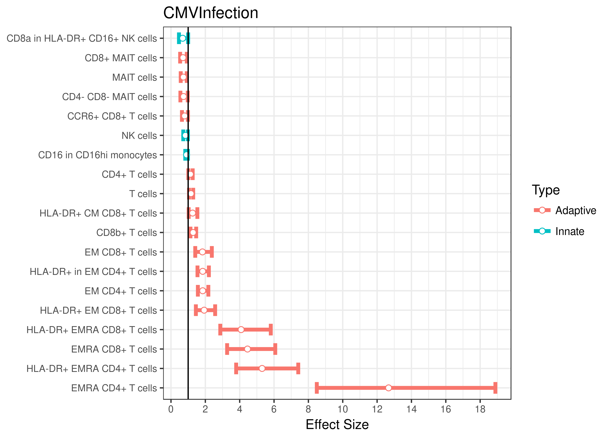
plt_frame <- selected_confs %>% filter(treatment == "Age")
plot_effects(plt_frame, "Age")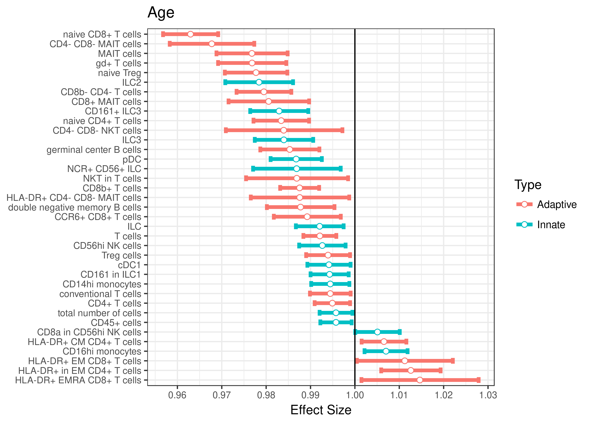
plt_frame <- selected_confs %>% filter(treatment == "Sex")
plot_effects(plt_frame, "Sex")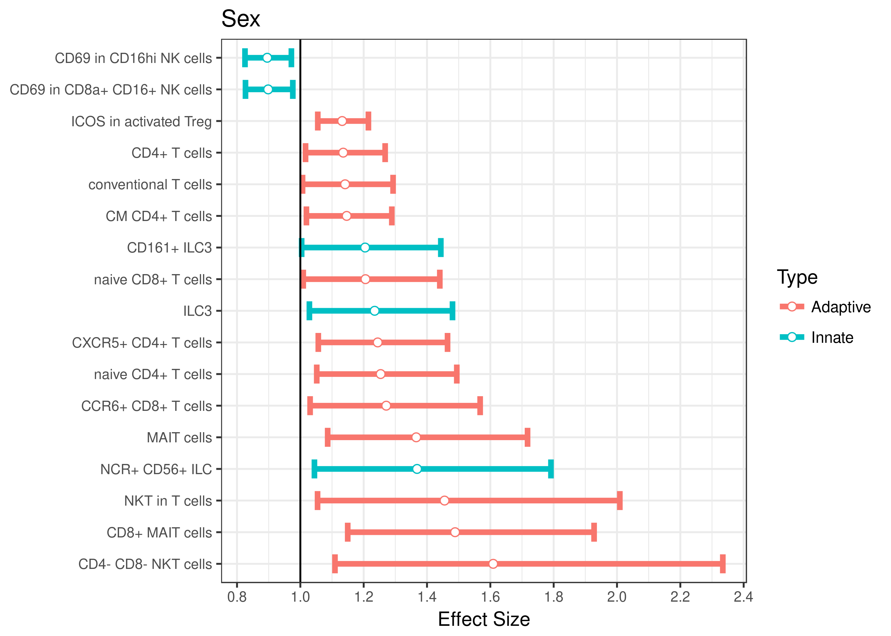
plt_frame <- selected_confs %>% filter(treatment == "Smoking",
treatment_levels == "SmokingActive")
plot_effects(plt_frame, "Active Smoker")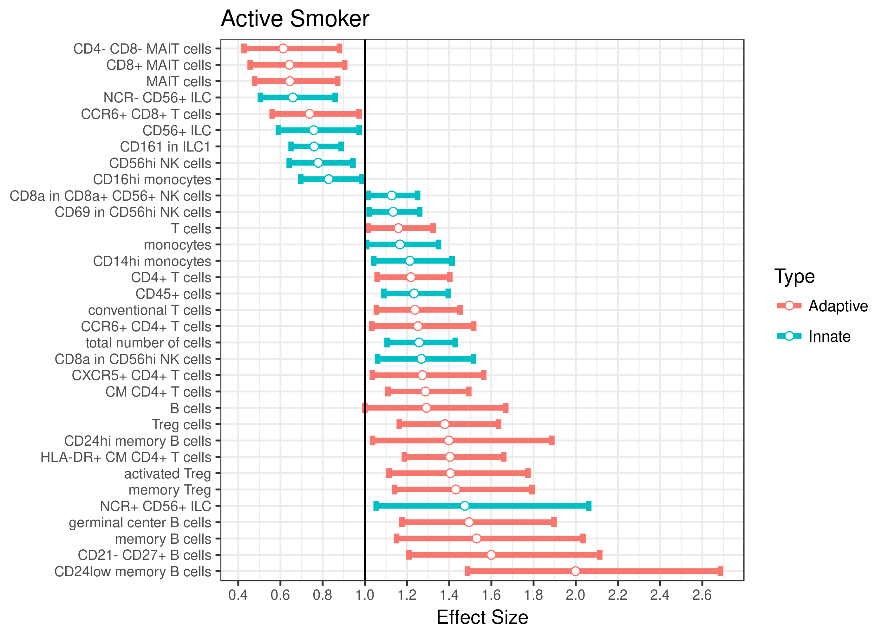
Bates, Douglas, Martin Maechler, Ben Bolker, Steven Walker, and others. 2014. “Lme4: Linear Mixed-Effects Models Using Eigen and S4.” R Package Version 1 (7): 1–23.
Benjamini, Yoav, and Yosef Hochberg. 1995. “Controlling the False Discovery Rate: A Practical and Powerful Approach to Multiple Testing.” Journal of the Royal Statistical Society. Series B (Methodological) 57 (1). [Royal Statistical Society, Wiley]: 289–300. http://www.jstor.org/stable/2346101.
Benjamini, Yoav, and Daniel Yekutieli. 2005. “False Discovery Rate–adjusted Multiple Confidence Intervals for Selected Parameters.” Journal of the American Statistical Association 100 (469). Taylor & Francis: 71–81.
Kenward, Michael G, and James H Roger. 1997. “Small Sample Inference for Fixed Effects from Restricted Maximum Likelihood.” Biometrics. JSTOR, 983–97.
Patin, Etienne, Milena Hasan, Jacob Bergstedt, Vincent Rouilly, Valentina Libri, Alejandra Urrutia, Cécile Alanio, et al. 2018. “Natural Variation in the Parameters of Innate Immune Cells Is Preferentially Driven by Genetic Factors.” Nature Immunology 19 (3): 302–14. doi:10.1038/s41590-018-0049-7.
Thomas, Stéphanie, Vincent Rouilly, Etienne Patin, Cécile Alanio, Annick Dubois, Cécile Delval, Louis-Guillaume Marquier, et al. 2015. “The Milieu Intérieur Study — an Integrative Approach for Study of Human Immunological Variance.” Clinical Immunology 157 (2): 277–93. doi:https://doi.org/10.1016/j.clim.2014.12.004.